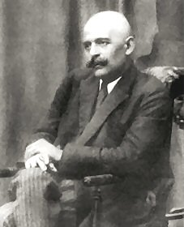

Mr. George Gurdjieff
The preacher of the ancient gospels...

Main things I noted about this person
- Born as: George Ivanovich Gurdjieff around 1866–1877 in Alexandropol (actual Armenia).
- Taught: that most humans do not possess a unified consciousness and thus live their lives in a state of hypnotic "waking sleep", but that it is possible to awaken to a higher state of consciousness and achieve full human potential through The Work on Oneself or "The System".
- Teaching Fundamentals Gurdjieff's method for awakening one's consciousness unites the methods of the fakir , monk and yogi , and thus he referred to it as the "Fourth Way".
- Grew up on a grassy plateau-steppe and high mountains, which was inhabited by a multi-ethnic and multi-confessional population.
- Travelled in search of "the truth" to many destinations from the birthland as for example to: Central Asia, Egypt, Iran, India, Tibet, Rome, Russia, United States of America and France.
- Self-development teachings. Gurdjieff taught people how to increase and focus their attention and energy in various ways and to minimize daydreaming and absentmindedness.
- Methods. Gurdjieff used a number of methods and materials, including meetings, music, movements (sacred dance), writings, lectures, and innovative forms of group and individual work.
- Music. Apart of Caucasian and Central Asian folk and religious music, Russian Orthodox liturgical music, and other sources, Gurdjieff wrote many pieces with Thomas de Hartmann.
- Movements or sacred dances, constitute an integral part of the Gurdjieff Work. Gurdjieff sometimes referred to himself as a "teacher of dancing" and gained initial public notice for his attempts to put on a ballet in Moscow called Struggle of the Magicians.
- Writings/Books:
- The Herald of Coming Good by G. I. Gurdjieff (1933, 1971, 1988)
- All and Everything trilogy
- Views from the Real World gathered talks of G. I. Gurdjieff by his pupil Olga de Hartmann(1973)
- Scenario of the Ballet: The Struggle of the Magicians ISBN 978-0957248120 by G. I. Gurdjieff
- Gurdjieff's notable pupils include: Peter D. Ouspensky, Thomas de Hartmann, Jeanne de Salzmann, John G. Bennett, Alfred Richard Orage, Maurice Nicoll and many others.
- Gurdjieff died: 29 October 1949 (aged 71–83) at Neuilly-sur-Seine, France.
Gurdjieff said that "two or three thousand years ago there were yet other ways which no longer exist and the ways then in existence were not so divided, they stood much closer to one another. The fourth way differs from the old and the new ways by the fact that it is never a permanent way. It has no definite forms and there are no institutions connected with it."
--Peter D. Ouspensky ("The Fourth Way")